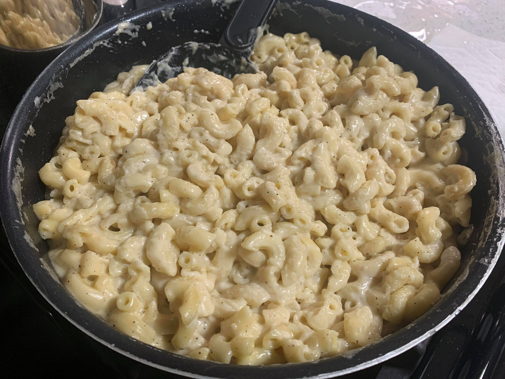

Stovetop Macaroni and Cheese (Panera-style)

Ingredients:
- 3 tbsp Unsalted butter
- 3 tbsp Flour
- 1 1/4 cup Whole milk
- 1 cup Heavy cream
- 1/2 tsp Salt
- 1 tsp Pepper
- 1/2 tsp Ground mustard
- 1/2 tsp Garlic powder
- 1 1/2 cups White cheddar, grated
- 3 cups Pasta elbows
- Optional: Breadcrumbs
Instructions:
- Melt the usalted butter on a pan over medium low and whisk in the flour.
- In increments, slowly add the milk and heavy cream while whisking constantly.
- Mix in the salt, pepper, mustard, and garlic powder.
- Once it starts to thicken, add 1 cup of the grated white cheddar and let it melt. Once the cheddar melts, add the other 1/2 cup of cheddar and stir thoroughly.
- Pour in the cooked pasta and mix.
- Optionally, top with more grated cheddar and breadcrumbs and broil until toasted.